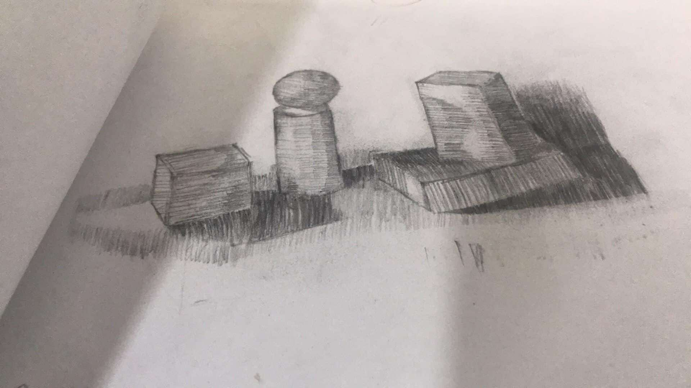
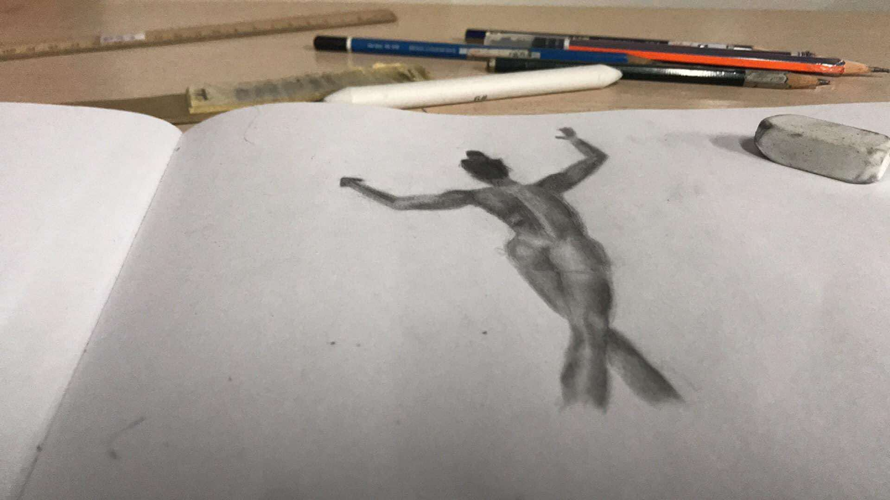

About Me:
I'm Justin Bryden G. Arroco. I am a programmer, artist, and animator from Pasay, Philippines. I enjoy playing a variety of games, mostly survival games.
Education & Achievements:
Graduated from Pasay City South High School with high honors. Achievements include awards like "Most Promising Animator" in the APC Bootcamp. Currently an honor lister student at APC.
Course:
BS Computer Science – Specialization in Software Systems (BSCS-SS).
IT Experience:
Developed simple games and applications promoting environmental safety.
Hobbies & Interests:
I enjoy drawing, gaming, and exploring music and its history, particularly hip-hop and K-pop.
Goals In Life & Dreams:
My aspiration is to become a game developer or artist. Inspired by the Netflix series *Arcane*, I hope to one day collaborate with its creators.
 